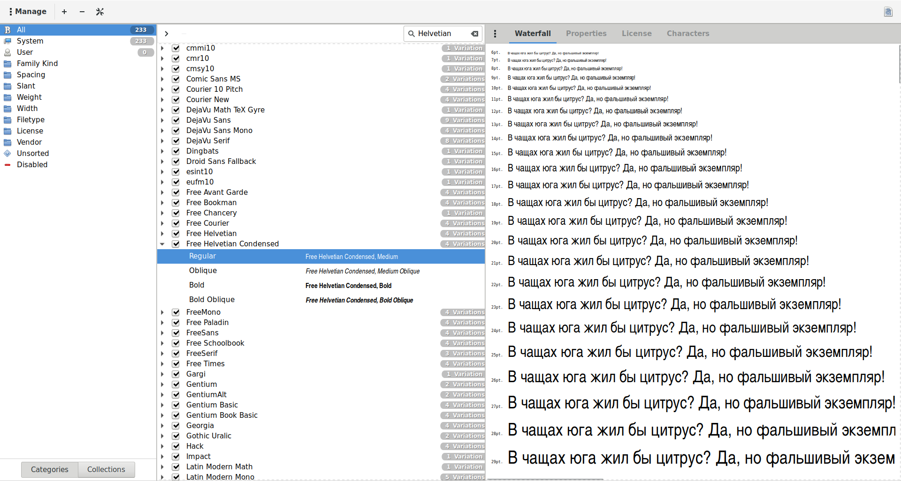

Раньше для просмотра шрифтов в Linux традиционно использовалась программа fontmatrix. Однако с 2011 года ее нет в наличии в дистрибутиве Debian. Видимо, она считается устаревшей.
Теперь для просмотра шрифтов рекомендуется использовать программу Font Manager, которая устанавливается из пакета font-manager. Просмотр шрифтов в ней выглядит вот так:

Недостаток этого инструмента в том, что невозможно узнать, в каком файле лежит тот или иной шрифт. Font Manager работает на уровне подсистемы шрифтов и скрывает информацию о том, из какого источника шрифт находится в системе.
Так же существует инструмент KFontView (запусаемый файл kfontview) Он позволяет просматривать файлы со шрифтами, например файлы *.ttf.